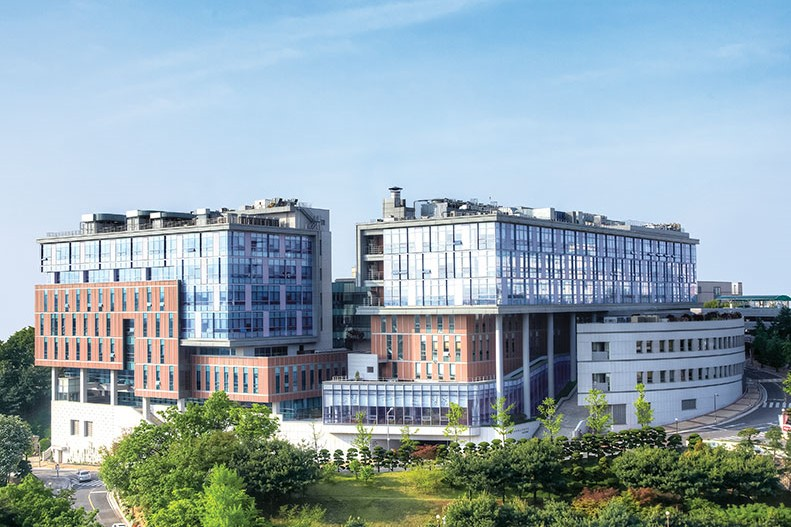
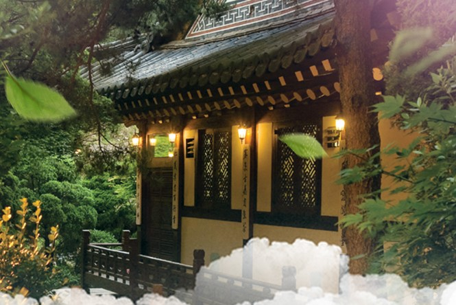

城北区
邻近场馆：高丽大学 - 化汀体育馆

高丽大学 Korea University
地址：首尔城北区安岩路145
地铁：6号线安岩(Anam)站1/2号出口
距场馆距离：场馆就在大学内部
概况：高丽大学是韩国著名的私立研究型综合大学，坐落山间，建筑古老而富有底蕴。校内可以乘坐免费循环巴士，校外街道有很多咖啡厅、餐厅和购物中心。
Tripadvisor点评：4.5星；53条评论；关键词包括"辽阔"和"建筑很美"。
开放时间：全天
建议游览时间：1-2小时

北汉山国立公园 Bukhansan National Park
地址：首尔城北区辅国门路262
地铁：4号线吉音(Gireum)站2号出口，打车约9分钟可到
距场馆距离：打车约30分钟可到
概况：北汉山国立公园有着秀美的自然风光和保存完整的文化资源，位于繁华的都市，却提供了一方安静的治愈空间。 北汉山的最大特点是巨大花岗岩形成的陡峭曲线，岩峰间清澈溪谷断然可见。
Tripadvisor点评：4.5星；1067条评论；关键词包括"壮观"和"适合徒步旅行"。
开放时间：夏季4:00-17:00，冬季4:00-16:00
建议游览时间：3-4小时

三清阁 Samcheonggak
地址：首尔市城北区大使馆路3
地铁：5号线光化门(Gwanghwamun)站3、4号出口，循环巴士约15分钟可到
距场馆距离：打车约15分钟可到
概况：三清阁为首尔市政府指定为文化设施，向公众开放，进行传统文化演出，承办传统文化展览。由六栋韩屋建筑构成，分别作为剧场、韩式餐厅、茶馆、客房等。 由于地理位置较为偏僻，三清阁提供往返于明洞、仁寺洞、光化门一带的免费巴士，往返均可乘坐；提供英语导览服务。
Tripadvisor点评：4.5星；112条评论；关键词包括"环境优美"和"食物很棒"。
开放时间：11:00-22:00
建议游览时间：2-3小时